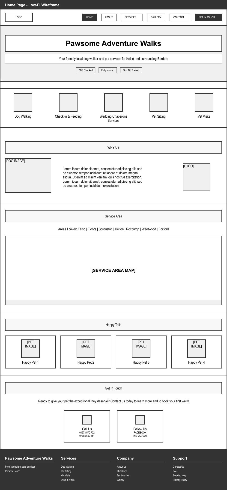
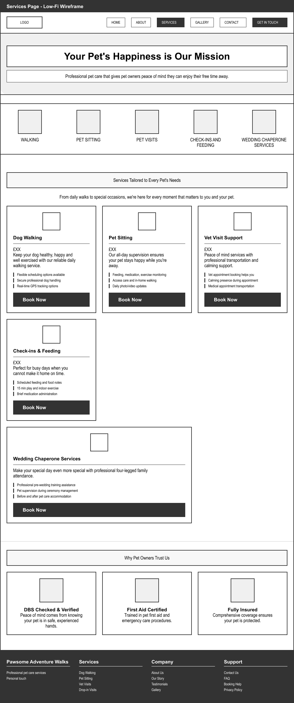
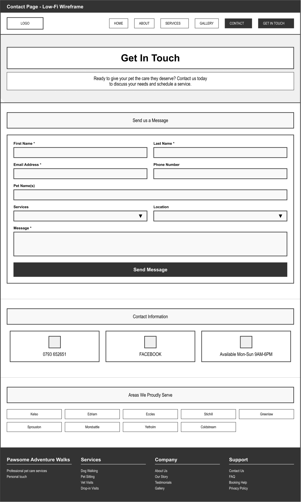

New Build • Website Design & Development
Discovery snapshot — interviews + local competitor teardown.

Sitemap with cross-links to trust content.
Homepage (lo-fi)
Service detail (lo-fi)
Contact/Booking (lo-fi)

Style tile & component snapshots.

Performance & maintainability considerations.
Launching Pawesome for pet parents
A ground-up site for a local pet services business (boarding • daycare • grooming • walking • training). Focused on clarity, trust, accessibility, and conversions.
Chapter 1
Project brief
Create a modern, mobile-first website that clearly explains services and makes booking effortless.
- Clarify services, pricing, and policies
- Build trust with real photos, staff bios, certifications
- Fast contact options (form + click-to-call)
- Simple content system the client can maintain
Constraints
- Short timeline — target: 8/27
- Limited photo/video budget
- Owner-provided copy to start
- Single location (consistent NAP)
- Initial booking via form + phone; integrations later
Chapter 2
Discovery (lightweight)
Quick interviews and competitor scans to learn decision drivers for pet parents.
- Need clear pricing, availability, and safety policies
- Facility/staff photos strongly influence trust
- Phone is common for first bookings → keep prominent
Chapter 3
Information architecture & content
Keep navigation simple. Dedicated service pages for clarity and local SEO.
- Home • Services (Boarding, Daycare, Grooming, Walking, Training) • Pricing • About/Team • Gallery • FAQs • Contact
- Clear CTAs: Book Now, Call, Request Quote
- Policies surfaced before checkout
Chapter 4
Visual direction
Warm, friendly, high-contrast. Large touch targets and readable type for on-the-go pet parents.
- Primary color: #ff6b35 (brand warmth)
- Type: Inter/system — headings 28–44px, body 16–18px
- Components: cards, service tiles, testimonial blocks, sticky mobile CTA
Chapter 5
MVP feature set
Must-have (Phase 1)
- Service pages with transparent pricing
- Booking/contact form (email notification)
- Prominent click-to-call on mobile
- Gallery & staff bios for trust
- Basic local SEO (schema, titles/meta, sitemap)
- Accessibility baseline (WCAG AA targets)
Nice-to-have (Later)
- Online scheduling integration
- Client portal (vaccines, forms, payments)
- Reviews import & UGC gallery
- Blog for SEO + education
Chapter 6
Development plan
Lightweight, fast, and maintainable. Tooling chosen for the client’s comfort.
- Stack: [Next.js or vanilla HTML/CSS + CMS] — TBD after handoff chat
- Responsive images, lazy loading, compression
- Semantic HTML, ARIA only where needed
- Event tracking for bookings & phone taps
- Hosting: Vercel/Netlify; custom domain + SSL
Planned timeline
~2–3 weeks
- Week 1: Discovery, IA, copy outline, low-fi wireframes
- Week 2: Visual design & components → dev start
- Week 3: Build, QA (accessibility + SEO), content load, launch
How we’ll measure
Success criteria (post-launch)
- Booking form submissions & phone tap rate
- Homepage → service page click-through
- Core Web Vitals (LCP ≤ 2.5s, CLS ≤ 0.1)
- Organic traffic to service pages (local queries)
Note: Metrics will be added after development & launch.
What’s next
Immediate next steps
- Finalize copy & gather photos (facility, staff, pets)
- Confirm tech stack with client
- Build MVP pages & forms
- QA: accessibility, mobile, SEO, performance
- Launch + begin tracking KPIs